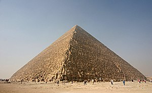

Great Pyramid of Giza
Colossus of Rhodes

Egyptologists believe the Great Pyramid of Giza was built as a tomb for the Fourth Dynasty Egyptian pharaoh Khufu (often Hellenized as "Cheops") and was constructed over a 20-year period. Khufu's vizier, Hemiunu (also called Hemon), is believed by some to be the architect of the Great Pyramid.
Fun Fact: It is the only wonder that still exsists today.
- https://en.wikipedia.org/wiki/Great_Pyramid_of_GizaThe Colossus of Rhodes was a statue of the Greek sun-god Helios, erected in the city of Rhodes, on the Greek island of the same name, by Chares of Lindos in 280 BC. One of the Seven Wonders of the Ancient World, it was constructed to celebrate its successful defense against Demetrius Poliorcetes, who had besieged it for a year with a large army and navy.
Fun Fact: It was the tallest statue in the ancient world.
- https://en.wikipedia.org/wiki/Colossus_of_RhodesThe Hanging Gardens of Babylon were one of the Seven Wonders of the Ancient World listed by Hellenic culture. They were described as a remarkable feat of engineering with an ascending series of tiered gardens containing a wide variety of trees, shrubs, and vines, resembling a large green mountain constructed of mud bricks. It was said to have been built in the ancient city of Babylon, near present-day Hillah, Babil province, in Iraq.
Fun Fact: The Hanging Gardens' name is derived from the Greek word kremastós (κρεμαστός).
- https://en.wikipedia.org/wiki/Hanging_Gardens_of_BabylonThe Lighthouse of Alexandria, sometimes called the Pharos of Alexandria, was a lighthouse built by the Ptolemaic Kingdom, during the reign of Ptolemy II Philadelphus (280–247 BC), which has been estimated to be at least 100 metres (330 ft) in overall height. One of the Seven Wonders of the Ancient World, for many centuries it was one of the tallest man-made structures in the world. The lighthouse was severely damaged by three earthquakes between 956 AD and 1323 and became an abandoned ruin.
Fun Fact: It was the third-longest surviving ancient wonder (after the Mausoleum at Halicarnassus and the extant Great Pyramid of Giza), surviving in part until 1480.
- https://en.wikipedia.org/wiki/Lighthouse_of_AlexandriaFun Fact: The Hanging Garden's name is derived from the Greek word kremastós (κρεμαστός).
- https://en.wikipedia.org/wiki/Hanging_Gardens_of_BabylonThe Statue of Zeus at Olympia was a giant seated figure, about 12.4 m (41 ft) tall, made by the Greek sculptor Phidias around 435 BC at the sanctuary of Olympia, Greece, and erected in the Temple of Zeus there. Zeus was the sky and thunder god in ancient Greek religion, who ruled as king of the gods of Mount Olympus. The statue was a chryselephantine sculpture of ivory plates and gold panels on a wooden framework. Zeus sat on a painted cedarwood throne ornamented with ebony, ivory, gold and precious stones. It was one of the Seven Wonders of the Ancient World.
Fun Fact: The statue was lost and destroyed during the 5th century AD; details of its form are known only from ancient Greek descriptions and representations on coins.
- https://en.wikipedia.org/wiki/Statue_of_Zeus_at_OlympiaThe Mausoleum at Halicarnassus or Tomb of Mausolus was a tomb built between 353 and 350 BC in Halicarnassus (present Bodrum, Turkey) for Mausolus, a native Anatolian from Caria and a satrap in the Achaemenid Empire, and his sister-wife Artemisia II of Caria. The structure was designed by the Greek architects Satyros and Pythius of Priene. Its elevated tomb structure is derived from the tombs of neighbouring Lycia, a territory Mausolus had invaded and annexed circa 360 BC, such as the Nereid Monument.
Fun Fact: The Mausoleum's' four sides were adorned with sculptural reliefs, each created by one of four Greek sculptors: Leochares, Bryaxis, Scopas of Paros, and Timotheus.
- https://en.wikipedia.org/wiki/Mausoleum_at_HalicarnassusThe Temple of Artemis or Artemision, also known less precisely as the Temple of Diana, was a Greek temple dedicated to an ancient, local form of the goddess Artemis (associated with Diana, a Roman goddess). It was located in Ephesus (near the modern town of Selçuk in present-day Turkey). It was completely rebuilt twice, once after a devastating flood and three hundred years later after an act of arson, and in its final form was one of the Seven Wonders of the Ancient World. By 401 AD it had been ruined or destroyed. Only foundations and fragments of the last temple remain at the site.
Fun Fact: The next, greatest and last form of the temple, funded by the Ephesians themselves, is described in Antipater of Sidon's list of the world's Seven Wonders.
- https://en.wikipedia.org/wiki/Temple_of_ArtemisClick on an image to learn more about it!
Move through the slide to learn more about the 7 Wonders of the World!
Egyptologists believe the Great Pyramid of Giza was built as a tomb for the Fourth Dynasty Egyptian pharaoh Khufu (often Hellenized as "Cheops") and was constructed over a 20-year period. Khufu's vizier, Hemiunu (also called Hemon), is believed by some to be the architect of the Great Pyramid.
Fun Fact: It is the only wonder that still exsists today.
- https://en.wikipedia.org/wiki/Great_Pyramid_of_GizaThe Colossus of Rhodes was a statue of the Greek sun-god Helios, erected in the city of Rhodes, on the Greek island of the same name, by Chares of Lindos in 280 BC. One of the Seven Wonders of the Ancient World, it was constructed to celebrate its successful defense against Demetrius Poliorcetes, who had besieged it for a year with a large army and navy.
Fun Fact: It was the tallest statue in the ancient world.
- https://en.wikipedia.org/wiki/Colossus_of_RhodesThe Hanging Gardens of Babylon were one of the Seven Wonders of the Ancient World listed by Hellenic culture. They were described as a remarkable feat of engineering with an ascending series of tiered gardens containing a wide variety of trees, shrubs, and vines, resembling a large green mountain constructed of mud bricks. It was said to have been built in the ancient city of Babylon, near present-day Hillah, Babil province, in Iraq.
Fun Fact: The Hanging Garden's name is derived from the Greek word kremastós (κρεμαστός).
- https://en.wikipedia.org/wiki/Hanging_Gardens_of_BabylonThe Lighthouse of Alexandria, sometimes called the Pharos of Alexandria, was a lighthouse built by the Ptolemaic Kingdom, during the reign of Ptolemy II Philadelphus (280–247 BC), which has been estimated to be at least 100 metres (330 ft) in overall height. One of the Seven Wonders of the Ancient World, for many centuries it was one of the tallest man-made structures in the world. The lighthouse was severely damaged by three earthquakes between 956 AD and 1323 and became an abandoned ruin.
Fun Fact: It was the third-longest surviving ancient wonder (after the Mausoleum at Halicarnassus and the extant Great Pyramid of Giza), surviving in part until 1480.
- https://en.wikipedia.org/wiki/Lighthouse_of_AlexandriaThe Statue of Zeus at Olympia was a giant seated figure, about 12.4 m (41 ft) tall, made by the Greek sculptor Phidias around 435 BC at the sanctuary of Olympia, Greece, and erected in the Temple of Zeus there. Zeus was the sky and thunder god in ancient Greek religion, who ruled as king of the gods of Mount Olympus. The statue was a chryselephantine sculpture of ivory plates and gold panels on a wooden framework. Zeus sat on a painted cedarwood throne ornamented with ebony, ivory, gold and precious stones. It was one of the Seven Wonders of the Ancient World.
Fun Fact: The statue was lost and destroyed during the 5th century AD; details of its form are known only from ancient Greek descriptions and representations on coins.
- https://en.wikipedia.org/wiki/Statue_of_Zeus_at_OlympiaThe Mausoleum at Halicarnassus or Tomb of Mausolus was a tomb built between 353 and 350 BC in Halicarnassus (present Bodrum, Turkey) for Mausolus, a native Anatolian from Caria and a satrap in the Achaemenid Empire, and his sister-wife Artemisia II of Caria. The structure was designed by the Greek architects Satyros and Pythius of Priene. Its elevated tomb structure is derived from the tombs of neighbouring Lycia, a territory Mausolus had invaded and annexed circa 360 BC, such as the Nereid Monument.
Fun Fact: The Mausoleum's' four sides were adorned with sculptural reliefs, each created by one of four Greek sculptors: Leochares, Bryaxis, Scopas of Paros, and Timotheus.
- https://en.wikipedia.org/wiki/Mausoleum_at_HalicarnassusThe Temple of Artemis or Artemision, also known less precisely as the Temple of Diana, was a Greek temple dedicated to an ancient, local form of the goddess Artemis (associated with Diana, a Roman goddess). It was located in Ephesus (near the modern town of Selçuk in present-day Turkey). It was completely rebuilt twice, once after a devastating flood and three hundred years later after an act of arson, and in its final form was one of the Seven Wonders of the Ancient World. By 401 AD it had been ruined or destroyed. Only foundations and fragments of the last temple remain at the site.
Fun Fact: The next, greatest and last form of the temple, funded by the Ephesians themselves, is described in Antipater of Sidon's list of the world's Seven Wonders.
- https://en.wikipedia.org/wiki/Temple_of_Artemis